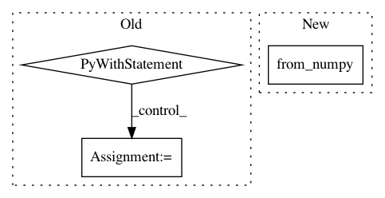

5510a7709e957615fb55397698f8e1c79cd5481b,torch_geometric/io/ply.py,,read_ply,#Any#,6
Before Change
def read_ply(path):
with open(path, "rb") as f:
data = PlyData.read(f)
pos = ([torch.tensor(data["vertex"][axis]) for axis in ["x", "y", "z"]])
pos = torch.stack(pos, dim=-1)
face = None
After Change
def read_ply(path):
mesh = openmesh.read_trimesh(path)
pos = torch.from_numpy(mesh.points()).to(torch.float)
face = torch.from_numpy(mesh.face_vertex_indices())
face = face.t().to(torch.long).contiguous()
data = Data(pos=pos, face=face)
In pattern: SUPERPATTERN
Frequency: 3
Non-data size: 3
Instances
Project Name: rusty1s/pytorch_geometric
Commit Name: 5510a7709e957615fb55397698f8e1c79cd5481b
Time: 2020-07-01
Author: matthias.fey@tu-dortmund.de
File Name: torch_geometric/io/ply.py
Class Name:
Method Name: read_ply
Project Name: bethgelab/foolbox
Commit Name: a04525112543a5dbf77401cde45442932aeec368
Time: 2020-01-26
Author: git@jonasrauber.de
File Name: foolbox/ext/native/models/tensorflow.py
Class Name: TensorFlowModel
Method Name: _init_preprocessing
Project Name: biolab/orange3
Commit Name: 8d62f3f8c5008935a38dbcce591946083629c11e
Time: 2013-01-24
Author: janez.demsar@fri.uni-lj.si
File Name: Orange/data/io.py
Class Name: BasketReader
Method Name: read_file